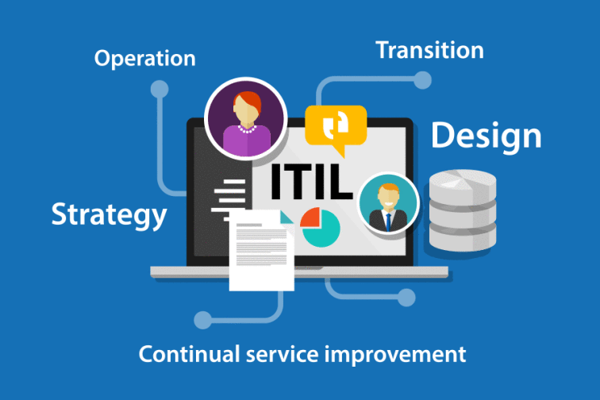
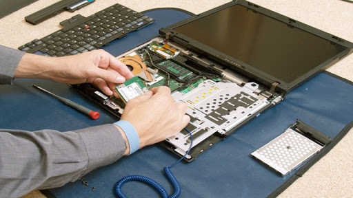

Gestión TI, Soporte Técnico y Desarrollo Web
ContactarAcerca de mí
Mi nombre completo es Carlos Andrés Silva Jorquera.
Tengo 44 años. Vivo en la comuna de Puente Alto muy cerca del lugar donde vivía de niño, luego de residir 13 años en Puerto Montt (desde 1999 al 2012).
Soy una persona que cultiva el conocimiento autodidacta. Siempre es bueno saber sólo por querer saber.
Mi formación académica:
- Soy Técnico de Nivel Superior en Telecomunicaciones. Carrera técnica que estudié en la Escuela de Especialidades de la FACH, entre 1997 y 1998.
- También soy Ingeniero en Informática. Carrera profesional que estudié en DuocUC, entre 2014 y 2017.
- El año 2018, cursé un Diplomado en Gestión de Proyectos Informáticos, en el Instituto Profesional IACC.
- El año 2019, cursé un Diplomado en Seguridad de la información, en DuocUC.
Mis certificaciones:
- 2018, ITIL® Foundation Certificate in IT Service Management.
- 2019, ITIL® Intermediate Certificate in IT Operational Support and Analisis.
- 2019, Scrum Foundation Professional Certificate (SFPC).
- 2020, ISO 20000 Foundation (I20000F).
- 2021, Scrum Master Professional Certificate (SMPC).
Mi experiencia:
Mi experiencia laboral se divide en 2 grandes etapas.
-
Entre 1999 y 2017 fui funcionario de la FACH.
Aquí me desempeñé en varias unidades TI, en áreas como:
- Soporte Técnico de Telecomunicaciones, donde fuí especialista técnico.
- Soporte Técnico Computacional, aqui fuí especialista técnico y supervisor.
- Redes, aquí me desempeñé como encargado.
- Seguridad Informática. Acá efectué labores de supervisión.
-
Desde el año 2018, ejerciendo como Ingeniero en Informática.
- Jefe de la Unidad TIC en la Universidad Federico Santa María (Campus San Joaquín).
- Ingeniero de Proyectos, en ACT S.A.
- Supervisor de Mesa de Servicio, en NetAxion Spa.
Servicios
Te cuento los Servicios que ofresco:
Gestión de Servicios TI
Te puedo apoyar en la Operación de tus Servicios TI, gestionando con un rol de Jefe o Supervisor.
En este contexto, te comento que cuento conocimientos y experiencia en la Gestión de Servicios TI. Mis conocimientos se basan en el marco de referencia ITIL (Information Technology Infrastructure Library). El cuál, es una librería de libre utilización basada en las mejores prácticas en la gestión de Infraestructuras de Tecnologías de la Información recopiladas por expertos y profesionales del sector.
ITIL v3, nos dice que un Servicio es un medio para entregar valor a los clientes, facilitando los resultados que los clientes quieren lograr y sin que éstos tengan que asumir los costos y riesgos asociados a la consecución de dichos resultados.
ITIL define un ciclo de vida que se divide en 5 fases:
- Estrategia
- Diseño
- Transición
- Operación
- Mejora continua
En relación a la Operación de los Servicios TI, aquí se efectúan el monitoreo proactivo y pasivo del funcionamiento del servicio, aquí se registran eventos, incidencias, problemas, peticiones o solicitudes, así como accesos al servicio.
En todas las fases del ciclo de vida, como último objetivo es medir y verificar que los servicios han aportado valor a la organización, con los niveles de servicio previamente acordados.
Soporte Computacional
Una de las áreas en las que tengo mayor experiencia es el Soporte técnico computacional. EL servicio que ofresco incluye realizar soporte al hardware y al software de tu PC o Notebook.
El soporte al hardware incluye el diagnóstico, reparación y/o mantenimiento de tu equipo computacional.
El soporte al software incluye el formateo, instalación de sistema operativo (Windows 7/8/10, Ubuntu) y otras aplicaiones de uso utilitario como Microsoft Office y Antivirus.
También te puedo ayudar a:
- Respaldar tu información
- Recuperar tu información.
- Conectar tu impresora.
- Configurar tu red wifi de tu casa.
- Mejorar o enchular tu PC o tu Notebook.
Gestión de Proyectos TI
Dado que cuento con conocimientos en dos de las metodologías más utilizadas en el área de gestión de proyectos como son PMI y Scrum, te ofresco mi servicio como Gestor de Proyectos TI, con un rol de Jefe de Proyectos, Analista PMO ó como Scrum Master.
En este contexto te cuento que como cualquier proyecto, un proyecto de tecnología de la información cuenta con una fecha de inicio y final estimadas, normalmente presentan además hitos y objetivos específicos que deben cumplirse durante el ciclo de desarrollo.
Los proyectos pueden tratarse de cambiar unos servidores antiguos, desarrollar un sitio web de comercio electrónico o fusionar bases de datos. El éxito de la gestión de proyectos informáticos se ve enmarcada por tres factores: tiempo, costo y alcance. Para que un proyecto tenga éxito, estas tres restricciones deben estar en equilibrio.
Desarrollo de Páginas Web

Otro de los Servicios que ofresco es el servicio de Desarrollo de Páginas Web, el cuál incluye desarrollar maquetas y prototipos funcionales e interactivos de interfaces web, a partir de la identificación de tus necesidades, integrando técnicas de arquitectura de información, criterios de diseño, usabilidad, accesibilidad y lenguajes de codificación y programación.
También te puedo ayudar a desarrollar y gestionar contenidos de proyectos web para distintos dispositivos, integrándolos o actualizándolos de acuerdo a tus requerimientos.
Contacto
Carlos Carvacho #408, Puente Alto, Santiago.
+56 955354704
csilvajo@hotmail.com